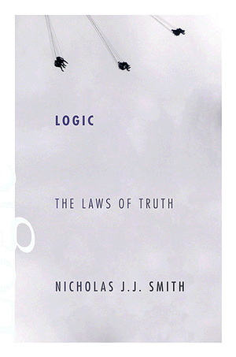

Nicholas J. J. Smith, Logic: The Laws of Truth

A long time ago, when the world was young and UK philosophy departments nearly all taught an amount of formal logic to their first year students, Peter Millican (I think it was) wrote round — yes, this was before email — to ask what text books we used in our courses. The majority answer was “Lemmon but …”, as in “I use Lemmon, but the students find it tough/I have to supplement it with handouts/I don’t really like it because …” There wasn’t a huge amount of choice back then, however, and Lemmon’s 1965 Beginning Logic was indeed notably better than most of the alternatives.
Nowadays, by contrast, there’s a ridiculous number of introductory logic books to choose from. If you ask around, no book stands out (partly no doubt because there’s no longer any kind of consensus about what should go into an entry-level logic course). However, the form of the answer still tends to be the same — “I use XYZ, but …”. Teachers of first year logic do seem to be a very picky bunch, rarely satisfied by someone else’s text. The unwise and perhaps over-confident among us of course think we could do better. The really unwise actually try do so. We spend an inordinate amount of time writing our introductory masterpiece, not believing the friends who kindly warn us that it will all take three times longer than we’d ever planned. And then an ungrateful world quite mysteriously fails to rush to welcome the result of all our efforts as the One True Logic Text.
So it goes. I speak from hard-won experience. It is with warm fellow-feeling for the author, then, that I note the arrival on the scene of Yet Another Introductory Logic Book (I rather wanted to use that as the title for mine, but thought better of it). My namesake Nicholas J. J. Smith’s Logic: The Laws of Truth is now out with Princeton UP: the publisher’s web page for the book is here. If you are thinking of adopting a new logic text, you can get an e-inspection copy. Full disclosure: Nick very kindly sent me a hardback copy.
I’ve browsed through quite a bit, dipping in and out. In general terms, I do much like the tone and the level and the coverage and the writing. And there’s the right amount of more ‘philosophical’ discussion alongside the formal work. Though I’m now going to be picky. Of course. Still, the headline news is that if you are a teacher in the market for new logic text, or a student looking for very helpful reading, this could indeed be the book for you.
- First appearances It isn’t the most important thing, of course, but it is not trivial either: it should be said straight away that the book has been very attractively typeset. It immediately looks more appealing than many logic books — not an easy thing to pull off with symbol-laded texts (though see (3) below, where I in effect complain that there are not enough symbols!). Credit to the publishers for this.
(2)* Coverage * The first 350 pages or so are logic-by-trees, for propositional logic (Part I) and predicate logic (Part II). The last hundred and a bit pages are on ‘Foundations and Variations’. The first chapter in Part III gives soundness and completeness proofs for the tree system (and comments on decidability, etc.). The second chapter discusses in fifty pages ‘Other Methods of Proof’ (axiomatic, ND, sequent calculi). The third and last of the additional chapters offers thirty pages on set theory.
I have to say that I’m quite green with envy that Nick got the space for his Part III! In my case, CUP balked at the idea of going much over 350 pages: so though I too start with trees and I sneak in a completeness proof for them, the chapters I’d have liked to have included on natural deduction in particular had to be axed. [Added: this , as you can tell, was before I wrote the ND-based second edition of IFL.]
Obviously, then, I do very much approve of the overall pattern of this book: trees first (students do find them easier to manage), then expand the story somewhat to other proof systems. It is one good way of arranging things. If, on the other hand, you are wedded to the belief that natural deduction should come more or less first, then you won’t like this book any more than you like other tree-first texts.
Parts I and II and a bit of Part III of Nick’s book cover much the same material, then, as my book, in about the same number of pages: so, at least initially, we pretty much agree on the major issue of pace too. But Part III does ratchet up the pace quite a bit: so, more generally, how well has Nick used his extra page budget? I’d have said that sequent calculi are definitely a more ‘advanced’ topic, and don’t belong in a first logic book. And as for axiomatic presentations of logics, I’d not say much about them (or just leave them till later too, until axiomatic theories are being discussed more generally). Instead, I would have used quite a bit of the extra space for a more generously paced discussion of natural deduction, first Fitch-style, then Gentzen-style. Nick’s squeezed fourteen pages are (I believe) just too quick to make a comfortable introduction for beginners, or to give them a real feel for the naturalness of certain systems: as I say, the pace has noticeably speeded up. (And would a student pick enough to be able to see what is going on in Dummettian discussions of harmony etc. that she might later encounter?) So I wouldn’t have used the fifty pages of his penultimate chapter as Nick does. But you might prefer the breadth against the depth.
As to the chapter on set theory, my feelings about this are pretty mixed. On the one hand, I agree that beginners need to pick up a reading-knowledge of set notation (because they are going to repeatedly meet it later). On the other hand, at this level we really shouldn’t be corrupting the youth by getting sets into the story unnecessarily soon, or e.g. by talking of relations or functions as sets of tuples (Great-uncle Frege will be very cross).
- Talk’n’chalk In logic lectures, you introduce the Big Ideas, and then do some worked examples on the board to illustrate them. In a book, you can give more detailed and expansive explanations of the Big Ideas (with the i‘s dotted and the t‘s crossed, and twiddly bits added); and you’ve got room too for more worked examples with running commentaries which the reader can review in her own time.
Nick is, I think, very good at the talk, at the discursive explanations: patient and very lucid. But in the book he isn’t particularly generous with the chalk, with the worked-examples-with-running-commentary. In fact, you might say he seems to be downright stingy. At a rough estimate, my book has — for one example — well over twice as many examples of propositional trees, and they tend to have more running commentary too. For another example, take that stumbling block for beginners, the translation into predicate logic of sentences involving multiple quantifiers. There are almost no worked examples here as compared with my book (or Paul Teller’s or many others). For a third example, there are remarkably few worked examples of predicate trees. (Ah: perhaps this explains in part the initially friendly look of the book — it just doesn’t have as many displayed arrays of scary symbols as you’d expect!)
True, there are lots of exercises in Logic: The Laws of Truth, and there will soon be a long answer-book freely available on the web. And that might well go some way to soothing worries here. But — from the draft document I’ve seen at the moment — the solutions are given in the answer-book, but again without much commentary (I mean without the class-room remarks like “At this point in the tree, we could instantiate the quantifier at line 4 with either a or b: the second is the better bet because …”, “The translation …. is tempting, but that’s wrong because ….”, and so on). Overall, I still think that the off-line student sitting with the book should have rather more by way of commented worked examples of all kinds immediately to hand to refer to as paradigms, before she embarks on exercises. But I agree that’s a debatable question of teaching style.
- Getting pernickety Comments (2) and (3) are about overall features of the book — its general shape, and the number of detailed worked examples as you go through. When we turn to fine details, then the fun can start!
I don’t think you should define “argument” as on p. 11 so that arguments can only have one inference step. On p. 41, the symbols of PL (the language of propositional logic) lack the ‘therefore’ sign; by p. 64, PL has acquired the sign unannounced, for “we translate [a certain] argument into PL as follows”, \(K \to D, K \therefore D.\) In my experience, you have to say quite a bit more than Nick does on p. 78 to make students swallow ex falso quodlibet. On p. 82, Nick oddly continues to talk about the logical form of a proposition when he has just argued there is typically no such thing (so he finds himself setting the exercise “Give three correct answers to the question ‘what is the form of this proposition?’ …”!). And so it goes.
Then there are little sins(?) of omission: for a start, you might query the lack of any discussion of the proper use of quotation marks or of use/mention (unless I have missed it!).
A somewhat more serious niggle concerns defining a valid argument at the outset to be one which is necessarily truth preserving “by virtue of its form or structure” — for I just didn’t pick up a clear account of what in general makes for a structural or formal feature of an inference as presented in the vernacular. We can tell stipulative stories about regimented arguments in certain formal languages, of course: this, we say, is deemed to be logical vocabulary, that isn’t. But the definition of validity is offered before we are supposed to know about such things, as a general story. Nick doesn’t say anywhere near enough to make it fly.
But you can nag away at any logic book like this, and I’m not going to do more of that here and now. Whether the book will work as a first formal logic text for you — as a teacher or a student — will surely depend on the bigger, structural, things. Do you want to start with trees? If you do, do you also want a book that tells you something about ND too (but not a lot)? How many commented worked examples do you want, or is it most important to you to get good discursive explanations of the Big Ideas? Nick’s whole book will take you to almost the same place as e.g. my book plus Bostock’s, with a bit of set theory thrown in, in considerably few pages than our two books together. Do you want to travel a bit more speedily with him? Alternatively, if what you want in a first course stops after Part II, then Nick’s very nicely written book and mine would work well together with one as the supplementary back-up reading for the other. The choice is yours!